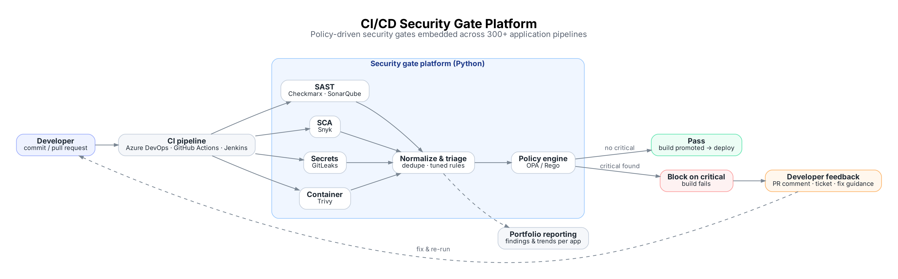

A Python-based platform that put automated, policy-driven security testing into the build pipelines of 300+ applications at a Fortune 50 telecommunications company.

Security testing at this scale had grown tool by tool, with each team running scanners differently and developers drowning in duplicate, low-value findings. I designed a single gate platform that every pipeline calls, whether it runs in Azure DevOps, GitHub Actions or Jenkins.
The platform orchestrates SAST (Checkmarx, SonarQube), SCA (Snyk), secrets detection (GitLeaks) and container scanning (Trivy). A normalization layer deduplicates results and applies tuned rules, and OPA/Rego policies turn them into one pass or block decision per build.
Blocked builds come back to developers as pull request comments and tickets with fix guidance, and every finding rolls up into portfolio reporting per application.